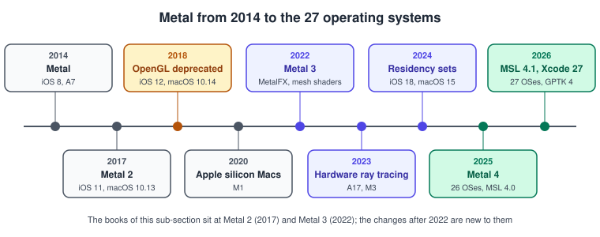
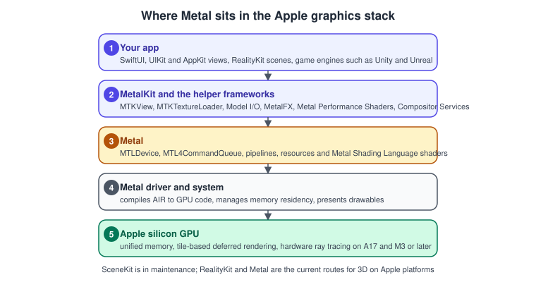
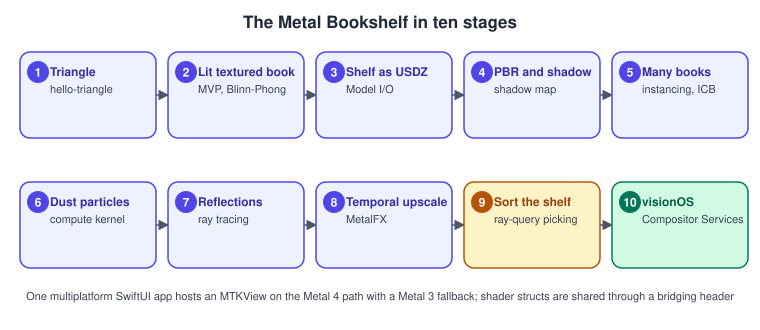

Metal
|
This content was generated with the assistance of AI and should be verified against the official documentation before being relied on in production. |
Metal is Apple’s low-level graphics and compute API for iOS, iPadOS, macOS, tvOS and visionOS. It gives an app direct access to the GPU of an iPhone, an iPad, a Mac with Apple silicon, an Apple TV or an Apple Vision Pro, with a small set of object types, a shading language that is C++ (the Metal Shading Language, MSL) and tools built into Xcode. This sub-section teaches Metal 4, the generation that arrived with the 26 operating systems, together with the Metal 3 equivalent where code must still run on older devices, and it covers MetalKit, MetalFX, Metal Performance Shaders, ray tracing, mesh shaders, the debugging tools, porting from other platforms and visionOS. It follows one running example, the Metal Bookshelf, from a first triangle to a small game, and it says plainly where Metal stands in 2026: the only supported low-level graphics API on Apple platforms, with OpenGL deprecated since 2018, and an API that is still gaining features every year, with machine learning now part of the frame. The pages build on the general pages of Graphics & Games; read those first if the rendering pipeline or the transformation chain are new to you.
What Metal and its neighbours are
| Name | What it is |
|---|---|
Metal |
The GPU API: devices, command queues, command buffers, encoders, pipeline states and resources. Metal 4 adds a new core API with the |
Metal Shading Language (MSL) |
The C++-based language of the shaders, compiled by the Metal Toolchain into a library that the app loads at run time. |
MetalKit |
Helpers for apps: |
MetalFX and Metal Performance Shaders |
Upscaling, frame interpolation and denoising, and a library of tuned image, linear algebra and neural-network kernels, with MPSGraph for graphs of them. |
SwiftUI, RealityKit and SceneKit |
Higher levels. SwiftUI shows an |
Vulkan, OpenGL and WebGPU |
The other graphics APIs. On Apple platforms MoltenVK and KosmicKrisp translate Vulkan to Metal, Safari implements WebGPU on top of it, and OpenGL is deprecated. |
Metal gives you the GPU and little else: you manage the resources, the synchronisation and the frame pacing, and you decide what a scene is. That is why most games use an engine that already speaks Metal, and why learning Metal first makes an engine’s behaviour predictable. The reasoning about when each layer pays off is in Choosing an API or Engine.
Where Metal sits

Metal appeared in 2014 for iOS, before Direct3D 12 and Vulkan, as one of the first modern explicit APIs. Metal 2 (2017) and Metal 3 (2022) added argument buffers, MetalFX, mesh shaders and fast resource loading, and Apple deprecated OpenGL and OpenGL ES in 2018. Hardware ray tracing came with the A17 and M3 in 2023, residency sets in 2024 and Metal 4 in 2025. What each release changed is on What’s New in Metal 4.

The same layers appear in the general Graphics APIs vs Game Engines page. Apple silicon matters for how you write Metal: the GPU shares memory with the CPU and renders in tiles, which the page GPU Architecture and TBDR explains and which later pages use again and again.
Version baseline
The facts below were checked on 1 November 2026 against the official pages cited in the last column. Items that follow a release can change, so check them again before relying on them.
| Item | Version and status | Source |
|---|---|---|
API generation |
Metal 4, announced at WWDC25 and available from iOS, iPadOS, macOS, tvOS and visionOS 26.0. The |
|
Shading language |
MSL 4.1, with the specification dated 4 June 2026. |
|
Metal 4 hardware |
A14 Bionic or later (iPhone, iPad and Apple TV), a Mac with Apple silicon (M1 or later) and Apple Vision Pro. |
|
Toolchain |
Xcode 27 with Swift 6.4 and the 27 SDKs. It needs an Apple-silicon Mac on macOS 26.6 or later. The Metal Toolchain is a separately downloaded Xcode component, as it has been since Xcode 26. |
|
Intel phase-out |
|
|
GPU families |
|
|
WWDC26 additions |
Quantised tensor formats, support for the Neural Accelerators of the M5 Pro and M5 Max, MetalFX neural upscaling and denoising, Game Porting Toolkit 4 and the command-line tools |
|
Deprecated |
|
The per-symbol pages under Metal documentation |
Still current |
|
The same pages |
When to choose what
Choose Metal when you are building a renderer or an engine feature, when you need compute, ray tracing, mesh shaders or machine learning in the frame, or when you want the least overhead on Apple hardware. Choose RealityKit or an engine when the scene, the physics and the tools matter more than control. Choose a port when the code exists already: Apple’s OpenGL migration sample, metal-cpp and Game Porting Toolkit are covered on Migrating from OpenGL and metal-cpp and Game Porting. The general criteria are in Choosing an API or Engine.
What’s covered
Orientation
| Page | Covers |
|---|---|
Metal 4 on the 26 operating systems, MSL 4.1 on the 27 ones, the WWDC26 additions, the hardware matrix and incremental adoption. |
|
The corrections for the two books, row by row. |
Foundations
| Page | Covers |
|---|---|
Xcode 27, the Metal Toolchain component, a multiplatform SwiftUI target, |
|
Unified memory, SIMD groups, tile-based deferred rendering, GPU families and |
|
The simd types, column-major matrices and normalised device coordinates with z from 0 to 1. |
Core API
| Page | Covers |
|---|---|
The device, the Metal 4 queue, allocator, command buffer, render pass, pipeline, argument table, drawable and present, with the Metal 3 equivalent. |
|
An |
|
Vertex fetch, the rasteriser, the fragment stage, blending, depth and stencil, pipeline states and |
|
MSL 4.x syntax, address spaces, attributes, structs shared through a bridging header and function constants. |
|
Buffers, storage modes, vertex descriptors and indexed draws. |
|
The model-view-projection chain, perspective and orthographic cameras, and arcball and first-person cameras. |
|
|
|
Model I/O, USD and USDZ, submeshes and materials. |
|
Phong and Blinn-Phong, normals and several lights. |
|
Cook-Torrance, normal, roughness and metallic maps, and an overview of skinning. |
|
Load and store actions, multipass rendering, MSAA resolve and memoryless targets. |
|
Shadow maps, cascades and percentage-closer filtering. |
|
The G-buffer, tile shaders, imageblocks and forward-plus. |
|
Events, shared events, fences, Metal 4 barriers and residency sets. |
Compute and GPU-driven rendering
| Page | Covers |
|---|---|
Kernels, grids, threadgroups, SIMD-group functions and |
|
A compute particle update and an instanced draw. |
|
Post-processing, MPS filters and MPSGraph. |
|
Tiers, |
|
Indirect command buffers, GPU culling, visibility results and instancing. |
|
Object and mesh functions, meshlets and level of detail. |
|
Patches, factors, post-tessellation vertex functions and when mesh shaders replace them. |
Advanced rendering
| Page | Covers |
|---|---|
Primitive and instance acceleration structures, intersectors, intersection queries and functions, curves, motion blur, hybrid shadows and reflections, and hardware ray tracing on A17 and M3 or later. |
|
Image-based lighting and EDR and HDR output. |
|
Spatial, temporal and neural upscaling, frame interpolation and denoising, with jitter and motion vectors. |
|
|
|
|
|
|
Tools, platforms and porting
| Page | Covers |
|---|---|
Frame capture, the dependency viewer, the shader debugger, validation, the Performance HUD, Metal System Trace, counters, heat maps and the command-line tools. |
|
Bandwidth, memory footprint, tile-based deferred rendering tips and frame pacing. |
|
metal-cpp, the Metal shader converter, Game Porting Toolkit 4 and the Windows developer tools. |
|
Compositor Services, |
|
A short bridge to the SwiftUI shader effects and to the low-level mesh and texture interop of RealityKit. |
|
Apple’s migration sample and a concept mapping from OpenGL to Metal. |
|
The one-page A4 summary and the PDF to download. |
Coverage map
Official documentation areas
| Area | Official documentation | Pages |
|---|---|---|
Overview |
The Metal pages on developer.apple.com: overview, what is new, resources and sample code, covering the positioning of Metal, machine learning and graphics, and the hardware |
|
Essentials |
Understanding the Metal 4 core API, drawing a triangle with Metal 4, performing calculations on a GPU and using Metal to draw a view’s contents: queues, reusable command buffers, allocators, argument tables and barriers |
Hello Triangle with Metal 4, Compute Kernels, MetalKit, MTKView and SwiftUI |
Devices and submission |
GPU devices and work submission: |
|
Encoders |
Render, compute, machine-learning and blit passes, indirect command encoding, and ray tracing with acceleration structures |
Render Passes and Load/Store Actions in Metal, GPU-Driven Rendering and Indirect Command Buffers, Ray Tracing in Metal |
Resources |
Resource fundamentals, buffers, textures, memory heaps, resource loading and synchronisation: storage modes, heaps, residency sets, |
Buffers and Vertex Descriptors, Textures and Samplers, Resource Loading and Streaming, Argument Buffers and Bindless Resources |
Shader compilation |
The Metal 4 compilation API, shader libraries, function specialisation, binary archives and dynamic libraries: |
Shader Compilation and Pipeline Caching, The Metal Shading Language |
Presentation |
Onscreen presentation, HDR and EDR, and game windows on macOS: |
MetalKit, MTKView and SwiftUI, Image-Based Lighting and HDR in Metal |
MetalKit, MSL, MetalFX and MPS |
The MetalKit reference ( |
MetalKit, MTKView and SwiftUI, The Metal Shading Language, MetalFX, Image Processing, Metal Performance Shaders and MPSGraph |
Machine learning on the GPU |
The samples "Running a machine learning model on the GPU timeline" and "Running inline ML operations in a shader with Metal 4", and the Metal Performance Primitives guide: |
|
Tools |
The Metal developer tools page and the Xcode Metal developer workflows: frame capture, the dependency viewer, the shader debugger, validation, the Performance HUD, Metal System Trace, counters, the shader cost graph, heat maps and the command-line tools |
|
Apple silicon |
Porting your Metal code to Apple silicon and tailoring apps for tile-based deferred rendering: memoryless targets, tile shaders and imageblocks |
GPU Architecture and TBDR, Deferred and Tile Shading, Render Passes and Load/Store Actions in Metal |
Games and porting |
The Apple games pages, Game Porting Toolkit, the Metal shader converter and metal-cpp: DXIL to metallib |
|
visionOS |
The Compositor Services framework: |
|
SwiftUI shaders |
The SwiftUI shader documentation (link only): |
|
Samples and WWDC |
The Metal sample code library (deferred lighting, forward-plus with tile shaders, mesh-shader level of detail, order-independent transparency, argument buffers, indirect command buffers, ray-traced reflections, sparse textures and the OpenGL migration) and the WWDC25 and WWDC26 sessions |
The pages above, each of which cites the samples and sessions it uses |
Concepts from the books
The two books are listed in the section bibliography. The short names are MBT (Caroline Begbie and Marius Horga, Metal by Tutorials, 4th edition) and CLA (Janie Clayton, Metal Programming Guide). Each cell lists the chapters that contribute the concept, and the last column the pages that cover it. The books are consulted references: no text, figure or code is copied from them, and where a book and the official documentation disagree the documentation is followed.
| Concept | MBT | CLA | Pages |
|---|---|---|---|
First app and view |
1 and 3 |
3 and 8 |
|
Pipeline, shaders and MSL |
3, 4 and 7 |
5 and 7 |
|
Buffers, vertex descriptors and storage |
2 and 4 |
6 |
|
Math, transforms and camera |
5, 6 and 9 |
4 and 9 |
|
Models and USD |
2 |
11 |
|
Textures and samplers |
8 |
6 and 12 |
|
Lighting, PBR, image-based lighting and reflection and refraction |
10, 11, 21, 22 and 29 |
9 |
Lighting Fundamentals in Metal, PBR Materials in Metal, Image-Based Lighting and HDR in Metal |
Render passes and multipass rendering |
12 |
13 |
|
Shadows, including soft shadows and ambient occlusion |
13 and 28 |
- |
|
Deferred and tile-based deferred rendering |
14 and 15 |
- |
|
Compute and particles |
16 to 18 |
15 and 16 |
|
Tessellation and terrain |
19 |
14 |
|
Post-processing, MPS and machine vision |
20 and 30 |
16 to 18 |
|
Animation and skinning |
23 and 24 |
9 |
|
2D drawing, scene graphs and instancing |
31 |
8 and 10 |
GPU-Driven Rendering and Indirect Command Buffers, Hello Triangle with Metal 4 |
Heaps and argument buffers |
25 |
6 |
|
Indirect command buffers and GPU-driven rendering |
26 |
- |
|
Ray-based rendering (raymarching and signed distance fields) |
27 to 29 |
- |
|
Neural networks on the GPU |
- |
19 and 20 |
|
Profiling and best practices |
31 and 32 |
partly |
Official concepts missing from the books
Neither book covers Metal 4, and several features that every current program uses were introduced after both were written. Mesh shaders are only mentioned in MBT. They are covered from the official documentation.
| Concept | Pages |
|---|---|
The whole Metal 4 core API |
|
Hardware ray tracing with acceleration structures |
|
Mesh shaders |
|
MetalFX in depth |
|
Residency sets |
Synchronization and Barriers, Argument Buffers and Bindless Resources |
Fast resource loading and sparse textures |
|
|
|
Binary archives, dynamic libraries and stitching |
|
|
|
Tensors and the machine-learning encoder |
|
metal-cpp, Game Porting Toolkit and the shader converter |
|
Compositor Services |
|
The Performance HUD, shader validation, heat maps and the command-line tools |
Where the books are out of date, the page that covers the concept says so, and What Has Changed Since the Older Metal Guides collects the corrections.
Reading path
-
Read What’s New in Metal 4 and Setup: Xcode and the Project to know the tools and the two paths.
-
Learn the hardware and the maths with GPU Architecture and TBDR and Math for 3D.
-
Draw the first triangle, host it with MetalKit, MTKView and SwiftUI, then read The Metal Render Pipeline and The Metal Shading Language.
-
Give the scene data and a camera: Buffers and Vertex Descriptors, Transforms and Camera, Textures and Samplers and Models with Model I/O and USD.
-
Light it and structure the frame with the pages on lighting, PBR, render passes, shadows, deferred and tile shading and synchronisation.
-
Move work to the GPU with Compute Kernels, Particles and Image Processing, Metal Performance Shaders and MPSGraph.
-
Scale up with Argument Buffers and Bindless Resources, GPU-Driven Rendering and Indirect Command Buffers, Mesh Shaders and Tessellation in Metal.
-
Add the advanced features: Ray Tracing in Metal, Image-Based Lighting and HDR in Metal, MetalFX, Machine Learning in Metal 4, Resource Loading and Streaming and Shader Compilation and Pipeline Caching.
-
Finish with the tools and the platforms: Debugging and Profiling Metal, Performance Best Practices, metal-cpp and Game Porting, Metal on visionOS and SwiftUI Shaders and RealityKit Interop, and keep the Metal Cheat Sheet at hand.
The Metal Bookshelf running example
The Bookshelf scene of the section landing page, described in
The Bookshelf scene and shared assets, is built as a
multiplatform SwiftUI app hosting an MTKView, with a Metal 4 path, a Metal 3 fallback and a visionOS target. The model and the
textures are the shared bookshelf.glb and the files in the same folder. The pages grow the app
in ten stages, and the shader structs are shared between Swift and MSL through a bridging header.

-
a triangle (Hello Triangle with Metal 4)
-
a textured, lit, rotating book with the model-view-projection chain and Blinn-Phong (Transforms and Camera, Textures and Samplers and Lighting Fundamentals in Metal)
-
the shared shelf as USDZ through Model I/O (Models with Model I/O and USD)
-
physically based materials and a shadow map (PBR Materials in Metal and Shadows in Metal)
-
many books with instancing, then argument buffers and an indirect command buffer with GPU culling (Argument Buffers and Bindless Resources and GPU-Driven Rendering and Indirect Command Buffers)
-
compute dust particles (Particles)
-
ray-traced reflections on a glossy shelf (Ray Tracing in Metal)
-
MetalFX temporal upscaling (MetalFX)
-
a tiny game, "Sort the shelf": pick books with a ray query and drag them into order (Ray Tracing in Metal)
-
the immersive visionOS version through Compositor Services (Metal on visionOS)
Related material on this site
-
Graphics & Games for the section overview, the shared Bookshelf assets and the bibliography of every book and official source used.
-
Metal Cheat Sheet for a one-page printable summary.
-
Metal Shader Effects for the SwiftUI shader functions, and visionOS and Augmented Reality with ARKit and RealityKit for the app model of the visionOS pages.
-
Performance and Instruments and Debugging with Xcode and LLDB for general profiling and debugging.
-
Apple Intelligence and Machine Learning and Apple Platforms for Core ML and MLX, and llama.cpp for a Metal compute use case.
-
OpenGL for the API that Metal replaced on Apple platforms, and WebGPU: Overview and Comparison with WebGL for the browser API that Safari runs on Metal.
-
The Rendering Pipeline and Coordinate Spaces and Transforms for the API-neutral background.
-
Rendering Overview in the Unreal Engine sub-section for how an engine reaches Metal through its RHI.
Bibliography
Books
The Metal pages draw on two books. The books are consulted references for concept coverage: no text, figure or code is copied from them, and where a book and the official documentation disagree the documentation is followed. The complete entries, with every other source of the section, are in the section bibliography.
References
-
Apple, Metal: https://developer.apple.com/metal/ with https://developer.apple.com/metal/whats-new/, https://developer.apple.com/metal/resources/, https://developer.apple.com/metal/tools/, https://developer.apple.com/metal/sample-code/, https://developer.apple.com/metal/cpp/ and https://developer.apple.com/metal/shader-converter/
-
Metal Shading Language specification: https://developer.apple.com/metal/Metal-Shading-Language-Specification.pdf
-
Metal Feature Set Tables: https://developer.apple.com/metal/Metal-Feature-Set-Tables.pdf
-
Metal documentation: https://developer.apple.com/documentation/metal, https://developer.apple.com/documentation/metalkit, https://developer.apple.com/documentation/metalfx, https://developer.apple.com/documentation/metalperformanceshaders, https://developer.apple.com/documentation/metalperformanceshadersgraph and https://developer.apple.com/documentation/compositorservices
-
Understanding the Metal 4 core API: https://developer.apple.com/documentation/metal/understanding-the-metal-4-core-api
-
Xcode Metal developer workflows: https://developer.apple.com/documentation/xcode/metal-developer-workflows
-
Xcode 27 release notes: https://developer.apple.com/documentation/xcode-release-notes/xcode-27-release-notes
-
Games on Apple platforms: https://developer.apple.com/games/ and https://developer.apple.com/games/game-porting-toolkit/
-
The books and the other sources of the section bibliography